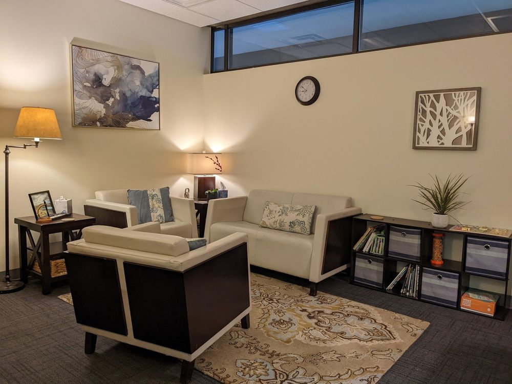

Meet Josh
Clients who typically have difficulty sharing or being vulnerable, especially those who have experienced trauma or abuse, often find an unexpected sense of trust & safety with me. I like to ensure clients feel safe, comfortable, and seen while challenging them to grow and overcome barriers. Fostering relationships without judgment allows us to recognize what keeps getting us stuck.
I value connection and shared exploration. In the first few sessions, I'll get to know you and what you care about so that your values, goals and needs guide us.
How I can help
Individuals
Trauma and PTSD, anxiety, depression, grief, and long-standing relationship patterns, using IFS, EMDR, and ACT.
Individual therapyCouples
Emotionally Focused Therapy to break the cycle you keep getting stuck in, rebuild trust, and learn to repair.
Couples therapyCouples intensives in Bend
Come to Bend for focused couples therapy in a short stretch of time, then enjoy the mountains and river.
Couples intensivesIf therapy hasn't helped before
Many people find me after other therapy didn't give them what they hoped for. With 17+ years of experience, more than a decade as a licensed clinician, and deep training in IFS, EMDR, and EFT, I focus on creating real safety and trust first, so we can reach what has felt out of reach. See my background.
In Bend or anywhere in Oregon
I use HIPAA-secure video and I'm happy to work via telehealth. I also meet in person at my Bend office. Online therapy across Oregon.
At a glance
- Therapist: Josh English, LCSW, Oregon license #L6113, 17+ years of experience
- Services: individual therapy, couples therapy (Emotionally Focused Therapy), IFS, EMDR, couples intensives, and clinical supervision
- Where: Bend, Oregon, and HIPAA-secure telehealth throughout Oregon
- Fee: $200 per session; free 15-minute consultation
- Insurance: Kaiser Permanente, Regence BCBS, PacificSource, Oregon Health Plan, First Choice Health, Samaritan Health
How I work
People heal and take risks when they feel safe and supported, so everything I do rests on an attachment lens. I draw on Internal Family Systems (IFS), EMDR, Emotionally Focused Therapy, AEDP-informed attachment work, ACT and mindfulness, and body-based (somatic) tools. Before opening my practice I created and directed an integrated behavioral health program in a family medical center, and I supported families in pediatric and newborn intensive care at Children's Hospital Los Angeles. More about me.
Practical details
- $200 per session; Kaiser Permanente (in network, no referral needed), Regence BCBS, PacificSource, OHP, First Choice Health, and Samaritan Health accepted. Fees and insurance
- Free 15-minute consultation by phone or in person
- The office is tucked inside Red Oaks Square and can be hard to find, so please see the photo directions.